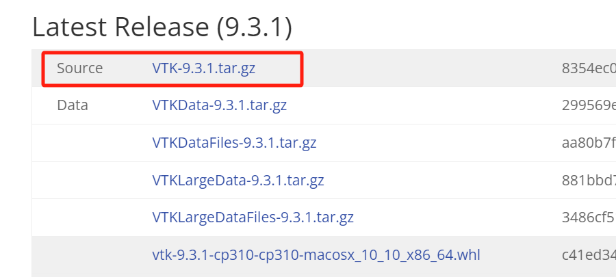
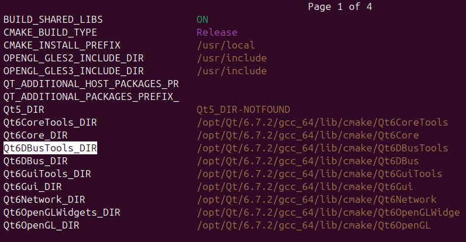
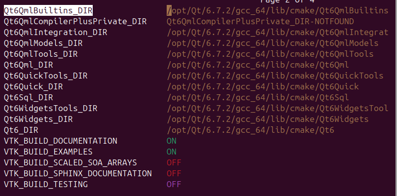
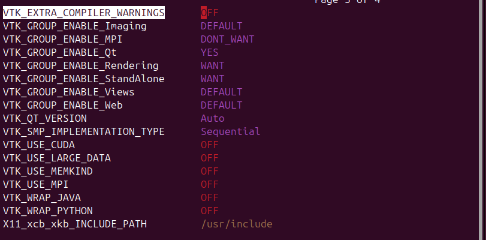
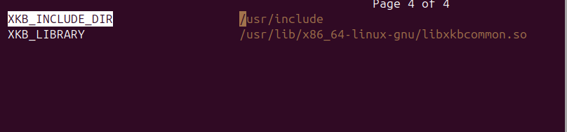

VTK 安装及配置
Reference
1 安装依赖
sudo apt-get update
sudo apt install build-essential cmake cmake-curses-gui mesa-common-dev mesa-utils freeglut3-dev git-core ninja-build libxcursor-dev libvulkan-dev doxygen graphviz
2 利用cmake配置vtk
在ubuntu中进入vtk官网下载
source文件把下载文件解压到
/opt/文件夹cd ~/Downloads sudo tar -zxvf VTK-9.3.1.tar.gz -C /opt利用cmake进行编译
cd /opt/VTK-9.3.1 sudo mkdir VTK-build cd VTK-build su ccmake ..点击
c进行configure，命令运行结束后，点击e进入配置页面，配置完成后点击c进行configure，有报错的话，就点击e返回配置，然后继续点击c进行configure，我的所有配置如下：配置成功后，会返回到配置界面，再次点击
c，然后点击g进行generate，完成配置.
3 编译并安装VTK
运行代码：
cd /opt/VTK-9.3.1/VTK-build su make -j$(nproc) make DoxygenDoc make install
4 配置环境变量
打开终端，输入以下命令打开环境变量配置文件.
sudo vim /etc/profile在配置文件最后一行添加以下代码，以个人的qt安装路径为准：
export VTK_DIR="/opt/VTK-9.3.1/VTK-build/"修改成功后，输入以下命令使其生效即可.
sudo -s source /etc/profile
5 测试
进入官网examples界面，选择Hello World的代码
在ubuntu内新建
codes，并新建cxx文件cd ~/Documents mkdir codes cd codes mkdir vtk-examples cd vtk-examples mkdir GeometricObjects cd GeomertricObjects mkdir CylinderExample vim CylinderExample.cxx编辑cxx文件，点击
esc，输入:wq// CylinderExample.cxx #include <vtkActor.h> #include <vtkCamera.h> #include <vtkCylinderSource.h> #include <vtkNamedColors.h> #include <vtkNew.h> #include <vtkPolyDataMapper.h> #include <vtkProperty.h> #include <vtkRenderWindow.h> #include <vtkRenderWindowInteractor.h> #include <vtkRenderer.h> #include <array> int main(int, char*[]) { vtkNew<vtkNamedColors> colors; // Set the background color. std::array<unsigned char, 4> bkg {26, 51, 102, 255}; colors->SetColor("BkgColor", bkg.data()); // This creates a polygonal cylinder model with eight circumferential facets // (i.e, in practice an octagonal prism). vtkNew<vtkCylinderSource> cylinder; cylinder->SetResolution(8); // The mapper is responsible for pushing the geometry into the graphics // library. It may also do color mapping, if scalars or other attributes are // defined. vtkNew<vtkPolyDataMapper> cylinderMapper; cylinderMapper->SetInputConnection(cylinder->GetOutputPort()); // The actor is a grouping mechanism: besides the geometry (mapper), it // also has a property, transformation matrix, and/or texture map. // Here we set its color and rotate it around the X and Y axes. vtkNew<vtkActor> cylinderActor; cylinderActor->SetMapper(cylinderMapper); cylinderActor->GetProperty()->SetColor( colors->GetColor4d("Tomato").GetData()); cylinderActor->RotateX(30.0); cylinderActor->RotateY(-45.0); // The renderer generates the image // which is then displayed on the render window. // It can be thought of as a scene to which the actor is added vtkNew<vtkRenderer> renderer; renderer->AddActor(cylinderActor); renderer->SetBackground(colors->GetColor3d("BkgColor").GetData()); // Zoom in a little by accessing the camera and invoking its "Zoom" method. renderer->ResetCamera(); renderer->GetActiveCamera()->Zoom(1.5); // The render window is the actual GUI window // that appears on the computer screen vtkNew<vtkRenderWindow> renderWindow; renderWindow->SetSize(300, 300); renderWindow->AddRenderer(renderer); renderWindow->SetWindowName("Cylinder"); // The render window interactor captures mouse events // and will perform appropriate camera or actor manipulation // depending on the nature of the events. vtkNew<vtkRenderWindowInteractor> renderWindowInteractor; renderWindowInteractor->SetRenderWindow(renderWindow); // This starts the event loop and as a side effect causes an initial render. renderWindow->Render(); renderWindowInteractor->Start(); return EXIT_SUCCESS; }接着在同目录下新建一个
CMakeLists.txt，编辑CMakeLists.txt文件代，点击esc，输入:wqcmake_minimum_required(VERSION 3.12 FATAL_ERROR) project(CylinderExample) find_package(VTK COMPONENTS CommonColor CommonCore FiltersSources InteractionStyle RenderingContextOpenGL2 RenderingCore RenderingFreeType RenderingGL2PSOpenGL2 RenderingOpenGL2 ) if (NOT VTK_FOUND) message(FATAL_ERROR "CylinderExample: Unable to find the VTK build folder.") endif() # Prevent a "command line is too long" failure in Windows. set(CMAKE_NINJA_FORCE_RESPONSE_FILE "ON" CACHE BOOL "Force Ninja to use response files.") add_executable(CylinderExample MACOSX_BUNDLE CylinderExample.cxx ) target_link_libraries(CylinderExample PRIVATE ${VTK_LIBRARIES} ) # vtk_module_autoinit is needed vtk_module_autoinit( TARGETS CylinderExample MODULES ${VTK_LIBRARIES} )在同目录下新建一个
build文件夹，并运行cd build cmake -DVTK_DIR:PATH=/opt/VTK-9.3.1/VTK_build .. make ./CylinderExample